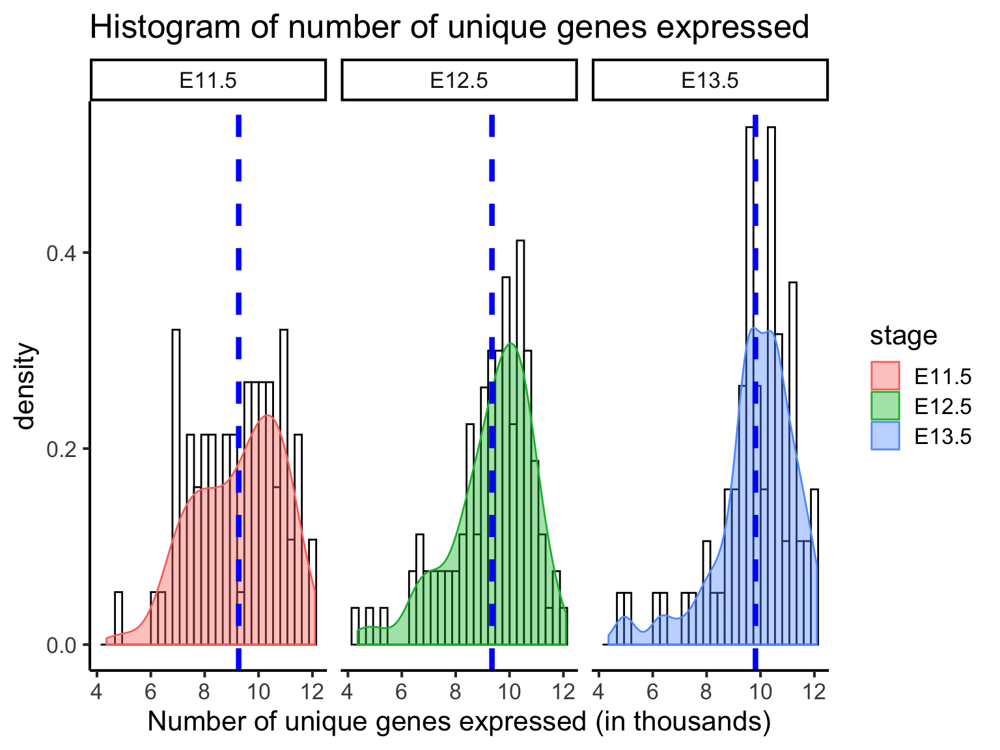
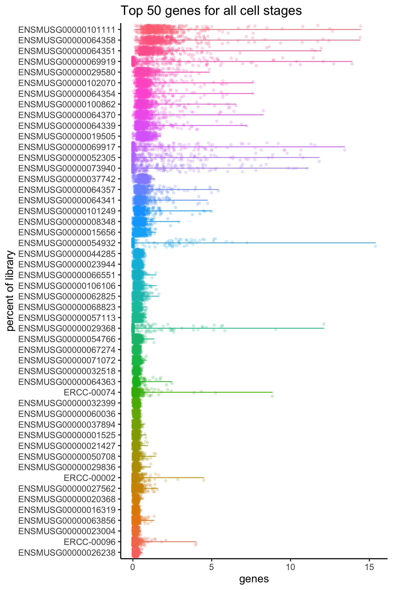

QC of single cell data
Sydney Precision Bioinformatics Group
03/05/2019
As discussed in 3rd May 2019, Yue Cao and Hani Kim will be jointly working on this part of the workshop.
However, the raw data will be prepared by Yingxin.
0.1 Introduction
One of the first things you need to do when you have obtained single-cell RNA-seq data is to perform a quality check of the reads you have sequenced. This process is part of cleaning our expression matrix in preparation for downstream data analysis. There are multiple quality control (QC) tools for sequencing data that can be used for both bulk and single-cell RNA-seq data. Here, we will work on performing various QCs and generate a report on the read quality of our data.
0.1.1 Load in packages
library(DropletUtils) #Droplet Utils is needed to plot the waterfall plot0.1.2 The Dataset
To illustrate cell QC, today we will be performing our analysis using single cell mouse liver dataset generated by Su et al. (2017). This liver dataset contains 507 cells at seven developmental stages between embryonic day 11.5 and postnatal day 2.5. The cells were sequenced using the Fluidigm C1 platform and the reads are paired end. The file containing the raw count matrix is located in the ‘X’ folder in your working directory.
Load the data:
scLiver <- read.csv("data/GSE87795_counts.csv")Inspect a small portion of the expression matrix.
head(scLiver[,1:5])## X E11.5_C01 E11.5_C03 E11.5_C05 E11.5_C06
## 1 ENSMUSG00000102693 0 0 0 0
## 2 ENSMUSG00000064842 0 0 0 0
## 3 ENSMUSG00000051951 0 0 0 0
## 4 ENSMUSG00000102851 0 0 0 0
## 5 ENSMUSG00000103377 0 0 0 0
## 6 ENSMUSG00000104017 0 0 0 0dim(scLiver)## [1] 51918 508This dataset contains 51918 rows and 507 columns. Each row corresponds to a gene, and each column corresponds to single cell.
Number of cells in each developmental stage
stage <- unlist(lapply(strsplit(colnames(scLiver), "_"), "[[", 1))
table(stage)## stage
## E11.5 E12.5 E13.5 E14.5 E16.5 E18.5 P2.5 X
## 70 100 71 99 78 58 31 1The first column records the gene ID. We can assign it as the column name of the count matrix and then remove this column from the count matrix.
geneID <- scLiver[,1]
rownames(scLiver) <- geneID
scLiver <- scLiver[,-1]
head(scLiver[,1:5])## E11.5_C01 E11.5_C03 E11.5_C05 E11.5_C06 E11.5_C07
## ENSMUSG00000102693 0 0 0 0 0
## ENSMUSG00000064842 0 0 0 0 0
## ENSMUSG00000051951 0 0 0 0 0
## ENSMUSG00000102851 0 0 0 0 0
## ENSMUSG00000103377 0 0 0 0 0
## ENSMUSG00000104017 0 0 0 0 0Now that the count matrix only contains numerical values, this makes subsequent analyses easier.
0.1.3 Quick Pre-processing of the Matrix
A simple way to make single cell datasets manageable for downstream analysis is to remove genes that are not expressed in any cells. Removing these genes does not affect the outcome of downstream analyses such as clustering yet help to improve computational speed dramatically.
0.2 Quality Control of Single Cell Data
There are a number of ways to assess the quality of our datasets.
0.2.1 QC1: Waterfall Plot
br.out <- barcodeRanks(scLiver)
plot(br.out$rank, br.out$total, log="xy", xlab="Rank", ylab="Total", col="royalblue")
o <- order(br.out$rank)
lines(br.out$rank[o], br.out$fitted[o], col="red")
abline(h=br.out$knee, col="dodgerblue", lty=2)
abline(h=br.out$inflection, col="forestgreen", lty=2)
legend("bottomleft", lty=2, col=c("dodgerblue", "forestgreen"),
legend=c("knee", "inflection"))
0.2.2 QC2: Library Size
Next, we can evaluate the total library size, that is the collective count of reads per cell, which provide an indication of sequencing depth.
options(scipen=999)
par(mfrow=c(1,2))
hist(colSums(scLiver[,grepl("E11.5",colnames(scLiver))])/1e3, breaks = 20, main = "E11.5", ylab = "number of cells", xlab = "library size (thousands)", col="gray")
hist(colSums(scLiver[,grepl("E13.5",colnames(scLiver))])/1e3, breaks = 20, main = "E13.5", ylab = "number of cells", xlab = "library size (thousands)", col="gray")
0.2.3 QC3: Number of Uniquely Expressed Genes
The number of uniquely expressed genes in individual cells
par(mfrow=c(1,2))
hist(colSums(scLiver[, grepl("E11.5",colnames(scLiver))]!=0), breaks = 20, main = "E11.5", ylab = "number of cells", xlab = "number of expressed genes", col="gray")
hist(colSums(scLiver[, grepl("E13.5",colnames(scLiver))]!=0), breaks = 20, main = "E13.5", ylab = "number of cells", xlab = "number of expressed genes", col="gray")
The two parameters are generally correlated. The poorer the sequencing depth of the dataset, the fewer the number of genes detected per cell.
0.2.4 QC4: Mitochondrial Gene Expression
There are approximately X number of mitochondrial genes in humans. The expression of mitochondrial genes is a common measure of quality control, as the level of mitochondrial gene expression can often indicate whether a cell is healthy or not. Calculating the percentage of total count contributed by the collective count of mitochondrial genes provides a rough estimate of cell quality. Generally, cells have ~10%… However, this value would